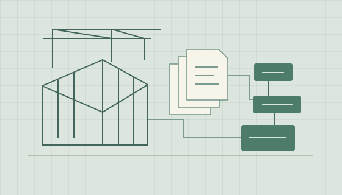
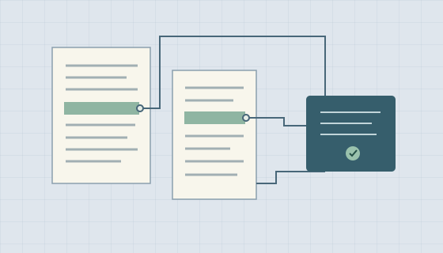
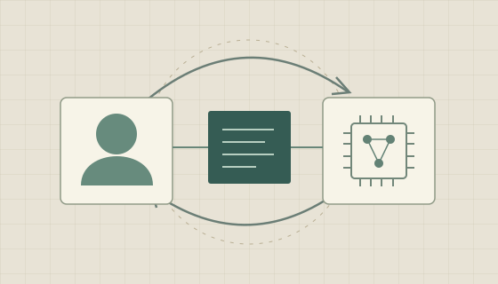
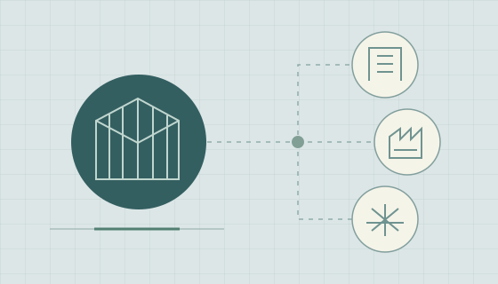

Industry
digitalization
Where can AI make a workflow more useful?
Identify friction in construction and engineering management, turn it into testable tools, and evaluate adoption and productivity.
Engineering management × Artificial intelligence
I’m Junming Zhang. I focus on rapid AI product prototyping and decision support—starting with the workflows, evidence and people behind a decision.
Construction and engineering management are my primary application domains. My longer-term interest is how AI can support industry digitalization and productivity.
Open to applied AI roles and PhD opportunities
Conceptual workflow · Explore actual public examples below
PhD research interests
I want to begin with concrete industry pain points, study how people and AI work together, and evaluate what makes a digital workflow useful in practice.

Where can AI make a workflow more useful?
Identify friction in construction and engineering management, turn it into testable tools, and evaluate adoption and productivity.

Can a recommendation be inspected?
Connect findings to their sources, check applicability, and make missing or conflicting information visible to decision makers.

How should expertise shape the system?
Use expert feedback to inform evaluation and program improvement, with clear review points for professional judgment.

What carries over—and what must change?
As methods mature, investigate which practices transfer to other industries and which require new evidence, workflows and evaluation.
These are research interests. Productivity improvements and cross-domain transfer are goals for future evaluation.
Selected work
A public implementation and worked examples connect my interests to a concrete construction-management task.
Construction tendering review involves dispersed documents, source hierarchies and professional interpretation. This prototype links document review to traceable evidence, deterministic checks and human decision support.
Inside the public demonstration
A preset finding cites an unregistered source.
Insufficient information.
Human confirmation needed.
legal_evidence = []An existing synthetic fixture processed by the evidence gate. No live LLM call.
Inspect the generated JSONPublic materials include the implementation, research overview and synthetic examples. The submitted manuscript is not shared here. Functional checks establish sample behavior; productivity gains and production readiness remain to be evaluated.
How I contribute
My contribution spans program architecture support, output acceptance, program refinement and evaluation planning.
I assist with program architecture design, keeping the industry task and the intended decision process in view.
I review and accept outputs, and adjust and optimize the program based on observed behavior.
I develop evaluation plans. Expert participants help check effectiveness and inform evaluation design through interviews.
AI tools assist code implementation and experimental table preparation.
Two paths. A shared focus.
Industry opportunities
I’m interested in rapid AI product implementation and decision-support workflows, connecting industry needs with testable prototypes and clear evaluation.
Explore the product perspectiveDoctoral opportunities
I’m interested in research on human–AI collaboration, traceable evidence and decision support, with construction and engineering management as the starting point.
Explore the research perspectiveThis website complements my CV. Please use the contact details in my CV to get in touch.
GitHub profile